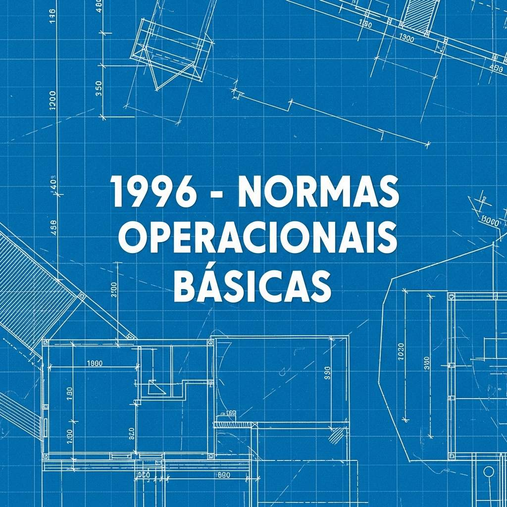
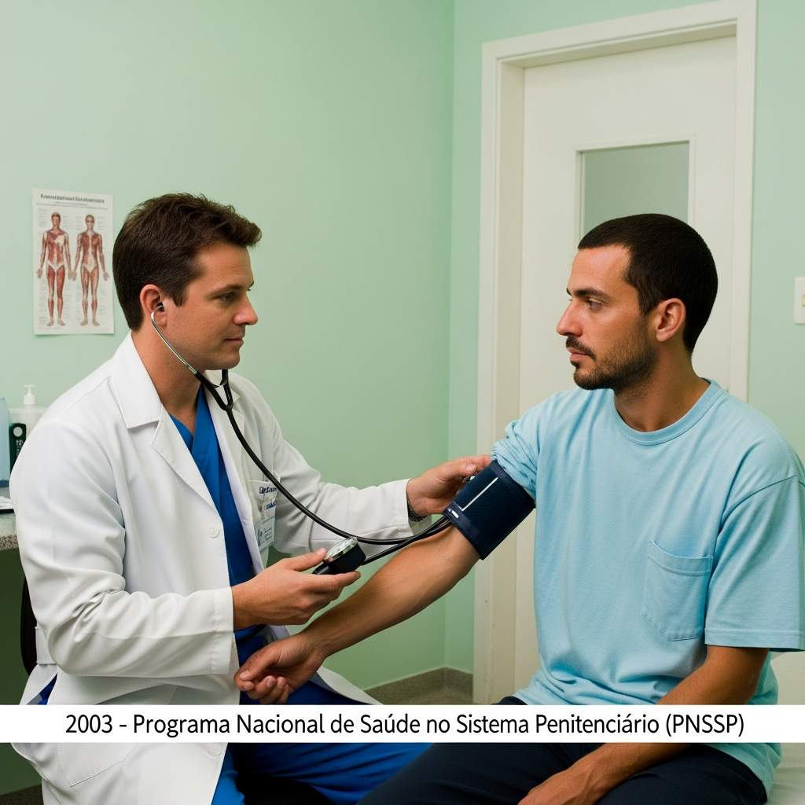
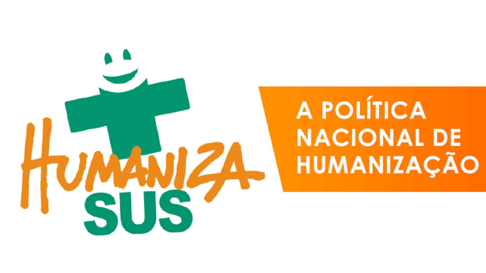
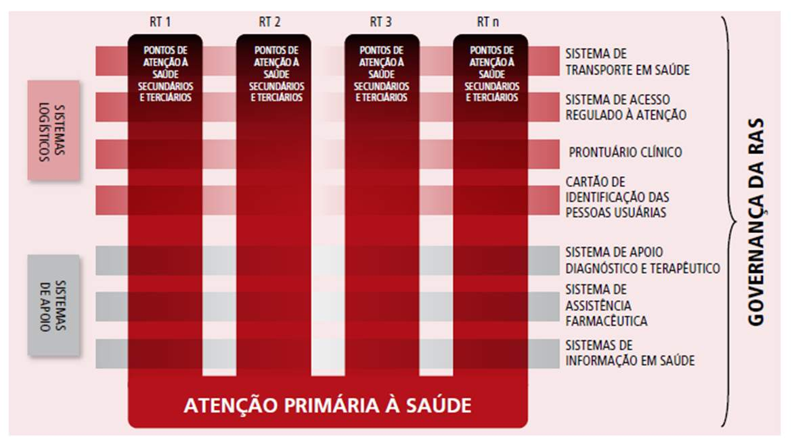
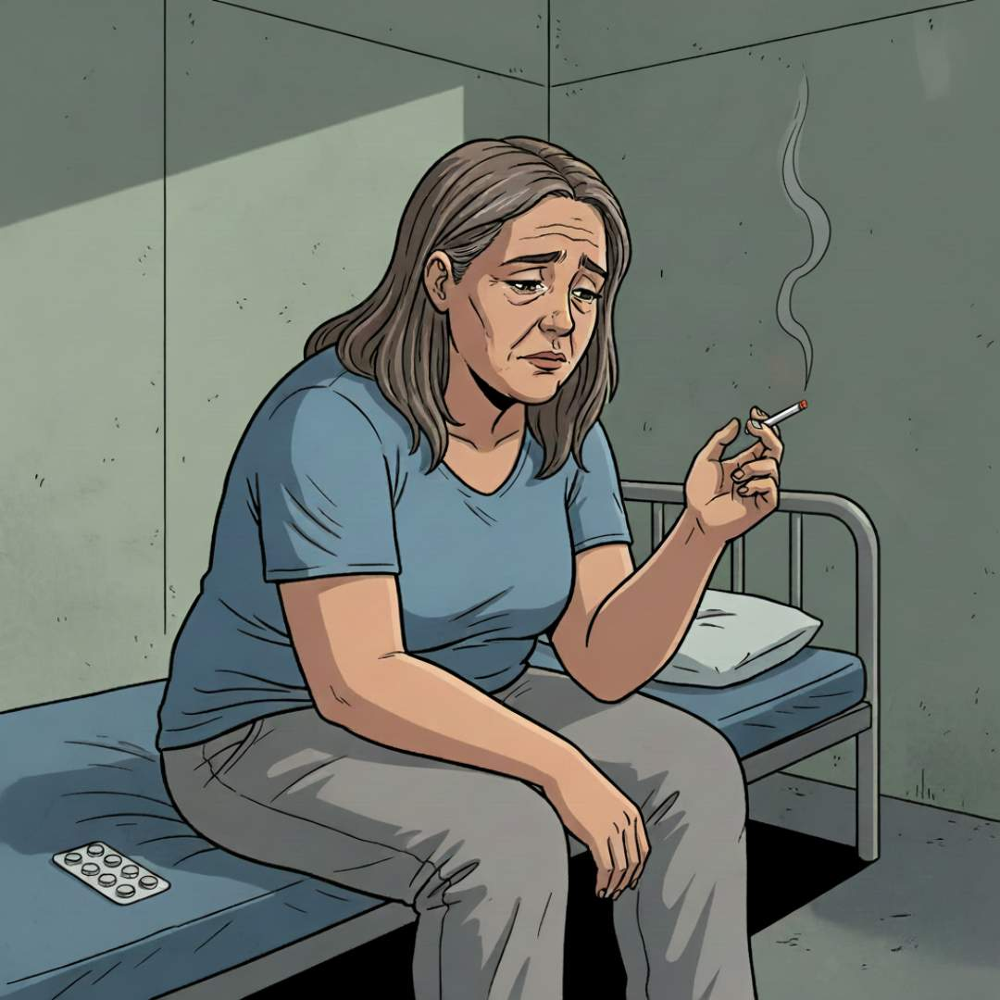
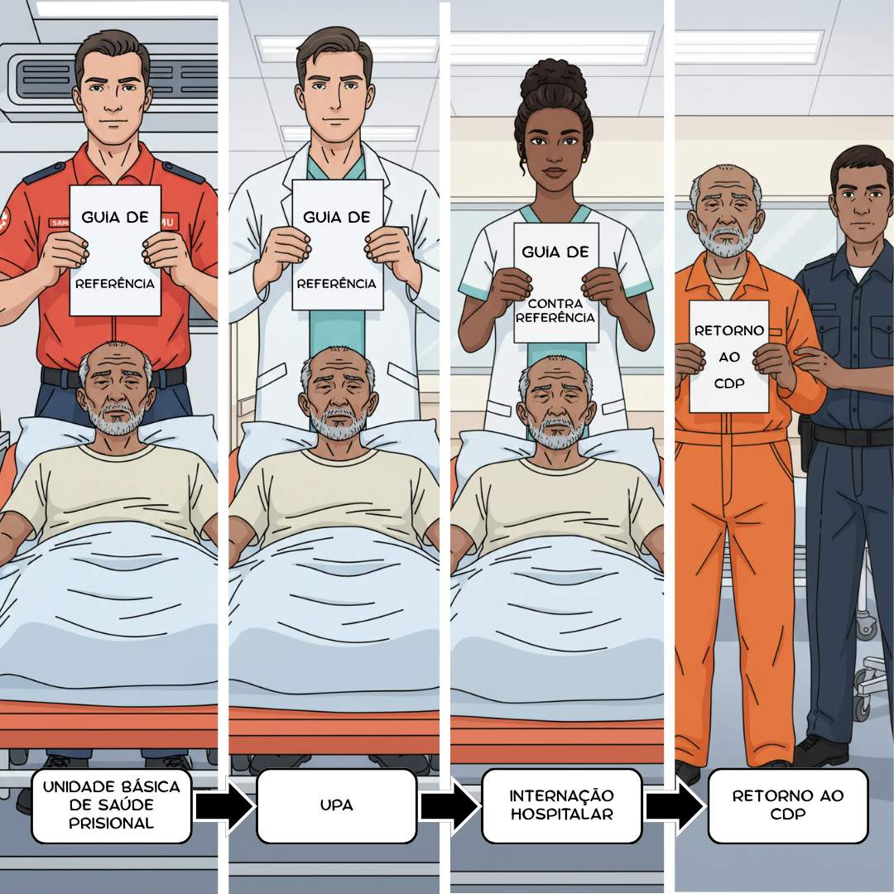

Apresentação da Unidade
Olá, estudante-trabalhador! Seja bem-vindo!
Nesta Unidade, será demonstrado como a Atenção Primária à Saúde (APS) se articula com as Redes de Atenção à Saúde (RAS) no contexto das Unidades Básicas de Saúde Prisional (UBSP). Para isso, além dos principais conceitos sobre o tema, serão apresentados casos fictícios de pessoas privadas de liberdade que precisam acessar diferentes pontos da RAS. Essa abordagem busca ampliar a compreensão dos profissionais que atuam ou têm vínculo com o sistema prisional, proporcionando uma visão mais ampliada e contextualizada da atenção à saúde nesse cenário.
Objetivos de Aprendizagem da Unidade
Caracterizar o panorama atual de saúde na população em geral e na população privada de liberdade;
Conhecer as Políticas Públicas de Saúde e as principais garantias de acesso aos serviços de saúde no território;
Reconhecer a importância da constituição de uma Rede de Atenção à Saúde no Sistema Único de Saúde e seus elementos constitutivos para garantia de princípios, diretrizes e atendimento das atuais demandas de saúde;
Compreender o papel das unidades básicas de saúde prisional enquanto ponto de atenção da Rede de Atenção à Saúde;
Reconhecer as potencialidades das unidades básicas de saúde prisional para garantia do acesso aos serviços de saúde e da atenção integral à saúde das Pessoas Privadas de Liberdade;
Reconhecer o rastreamento e o diagnóstico de saúde como ações relevantes para a prevenção na saúde;
Explicar a importância dos sistemas de referência e contrarreferência e dos sistemas de informação para a coordenação do cuidado às pessoas privadas de liberdade no âmbito das Redes de Atenção à Saúde;
Conhecer os principais sistemas de informação (indicadores do sistema prisional), e-SUS, Sistema de Informações do Departamento Penitenciário Nacional e e-SUS AB.
Carga Horária de Estudo: 10 horas
1.1 Panorama de saúde na população em geral e na população privada de liberdade
Os sistemas de atenção à saúde devem atender às necessidades da população e, por isso, também devem acompanhar as mudanças no perfil de saúde das pessoas. No Brasil, a situação de saúde vem passando por transformações, causadas por uma transição demográfica devido ao aumento da expectativa de vida e um quadro de tripla carga de doenças: doenças infecciosas e carenciais não superadas, condições de saúde por causas externas (agressões e acidentes de trânsito) e condições crônicas.
Segundo Eugênio Vilaça Mendes (2011, 2012, 2015), um dos maiores estudiosos da temática e a principal referência desta Unidade, as condições crônicas se desenvolvem lentamente e têm múltiplas causas, incluindo fatores hereditários, estilos de vida e exposição a fatores ambientais e fisiológicos. Ao contrário das condições agudas, as condições crônicas levam a mais sintomas e podem inclusive resultar em perda da capacidade funcional. Há que ressaltar ainda que muitas condições agudas podem evoluir para condições crônicas e que as condições crônicas também podem se agudizar, se não tratadas adequadamente. As condições crônicas incluem não apenas as doenças crônicas, como diabetes e câncer, mas também doenças infecciosas persistentes, condições ligadas à maternidade e ao período perinatal, transtornos mentais de longo prazo, deficiências físicas, entre outras.
O envelhecimento populacional trouxe o predomínio de condições crônicas, realidade que também se expressa nas pessoas privadas de liberdade (PPL), que apresentam altas taxas de doenças infecciosas persistentes e transtornos mentais. No sistema prisional, 62,6% das mortes são causadas por insuficiência respiratória e cardíaca, sepse (infecção generalizada), pneumonia e tuberculose, refletindo um longo e tortuoso processo de adoecimento, falta de assistência e definhamento (Conselho Nacional de Justiça, 2023).
De acordo com o Relatório de Informações Penais do primeiro semestre de 2024, o Brasil tinha 663.387 pessoas presas naquele período, distribuídas em 1.381 estabelecimentos penais. Desse total de pessoas, 2.666 apresentavam alguma deficiência e 30.156 foram diagnosticadas com doenças transmissíveis persistentes (HIV, sífilis, hepatite, tuberculose e hanseníase) (Brasil, 2024a).
Além disso, das 28.770 mulheres privadas de liberdade no Brasil em 2024, 212 eram gestantes. Além das doenças, a violência e as violações sistemáticas de direitos, marcadas por falhas na entrega de recursos básicos como alimentação adequada, água limpa e potável, itens de higiene, vestimenta e luz do sol, tornam as os estabelecimentos penais ambientes que agravam os problemas de saúde física e mental e aumentam os riscos de traumas e mortes violentas (Brasil, 2024a).
Reflexão
Estudante-trabalhador, você já parou para pensar em como é receber cuidados de saúde em uma
instituição penal?
A falta de estrutura nesses espaços torna difícil o acesso a itens básicos e a preservação da saúde
do corpo e a mente.
Quando se fala em atenção especializada, esses obstáculos só aumentam.
Considerando isso, você consegue refletir sobre as desigualdades no acesso ao cuidado em saúde nos
diferentes contextos?
1.2 Políticas Públicas de Saúde e garantia de acesso aos serviços de saúde
Diante da realidade das PPL, é essencial garantir seu direito à saúde, previsto em instrumentos legais desde a Lei de Execução Penal (LEP), de 1984, que foi regulamentada para assegurar atendimento médico, farmacêutico e odontológico às pessoas em situação de encarceramento (Brasil, 1984).
Posteriormente, a Constituição Federal de 1988 reforçou a necessidade de respeito à integridade física e moral dessa população (Brasil, 1988) e, em 2003, foi lançado o Plano Nacional de Saúde no Sistema Penitenciário (PNSSP), que tentou organizar o acesso da população privada de liberdade aos serviços de saúde no âmbito do Sistema Único de Saúde (SUS) (Brasil, 2005). Em 2014, esse plano foi avaliado e redesenhado, transformando-se em uma política pública que, até hoje, é constituída pela Política Nacional de Atenção Integral à Saúde das Pessoas Privadas de Liberdade no Sistema Prisional (PNAISP) (Brasil, 2014a).
Assim, vê-se que a PNAISP foi construída ao longo do tempo e esteve ancorada e alinhada a outros marcos da atenção à saúde no Brasil, como podemos ver na Figura 1.
Figura 1 - Linha do tempo da saúde no sistema prisional
1984
Lei de Execução Penal
1988
Constituição Federal (CF/88)
1990
Sistema Único de Saúde (SUS)
1994
Programa Saúde da Família
1996
Normas Operacionais Básicas

2003
Programa Nacional de Saúde no Sistema Penitenciário (PNSSP)

2003
Política Nacional de Atenção Básica e Política Nacional de Humanização

2014
Política Nacional de Atenção Integral à Saúde das Pessoas Privadas de Liberdade no Sistema Prisional (PNAISP)
Tal política está alinhada ao princípio de universalidade do SUS, o qual visa garantir o direito de todos os cidadãos à saúde, incluindo os que estão em situação de privação de liberdade. Dessa forma, o ordenamento jurídico brasileiro estabelece que as pessoas presas têm direito a um padrão de cuidados de saúde equivalente ao disponível à comunidade em geral. Isso significa que devem ter acesso aos mesmos serviços médicos oferecidos à população, incluindo prevenção, diagnóstico e tratamento de doenças, assim como cuidados reabilitativos e paliativos. As PPL devem ser atendidas em uma abordagem integral, que inclua a atenção à saúde mental, uma vez que a população privada de liberdade tem taxas significativamente mais altas de transtornos mentais do que a população em geral.
Para ofertar uma assistência integral às PPL, o sistema de saúde deve estar estruturado em Redes de Atenção à Saúde (RAS), a qual deve integrar os diferentes pontos de atenção (entre eles, encontram-se as UBSP). Isso supera um modelo fragmentado e reativo, inadequado diante do predomínio de condições crônicas entre as PPL.
Você conhece a importância da RAS para o atendimento ofertado à população? Vamos compreender!
As RAS foram concebidas para restabelecer a coerência entre a situação de saúde apresentada e a atenção prestada no SUS, sendo caracterizadas por um sistema de saúde integrado capaz de atender às diferentes necessidades de cuidado da população em geral, incluindo as PPL. Essa integração é essencial porque um único ponto de atenção, como as UBSP, não é suficiente para dar conta da complexidade das demandas de saúde das PPL. Dessa forma, é necessária uma articulação entre os serviços de saúde e até mesmo com outros setores, como Justiça e Educação.
Cabe ressaltar também a Política Nacional de Humanização (PNH) (Brasil, 2004), criada em 2003 para efetivar os princípios do SUS no cotidiano das práticas de atenção e gestão e qualificar a saúde pública no Brasil. A PNH deve estar presente e integrada a todas as políticas e programas do SUS, assegurando a valorização dos usuários, trabalhadores e gestores no processo de produção de saúde.
Por fim, a efetividade dessas políticas depende de uma gestão das UBSP alinhada aos princípios do SUS, sejam elas públicas, privadas ou híbridas. Em 2024, das 1.424 estabelecimento penais no Brasil, 255 contavam com equipes terceirizadas e seis operavam em modelo público-privado, enquanto as demais eram atendidas pelo serviço público (Brasil, 2024a).
1.3 Redes de Atenção em Saúde como parte do Sistema Único de Saúde
Após a caracterização do panorama de saúde das PPL e a análise da importância das políticas públicas de saúde, é necessário construir o conhecimento acerca da importância da criação de uma RAS que faça parte do SUS e de seus elementos constitutivos para garantia de princípios, diretrizes e assistência adequada às atuais demandas de saúde.
1.3.1 Breve história da construção das Redes de Atenção em Saúde
O direito à saúde das PPL é garantido por políticas públicas que determinam a integração dessa população ao SUS por meio das RAS. A concepção de RAS emergiu no Reino Unido na década de 1920 com o Relatório Dawson (Dawson, 1964 apud Mendes, 2011), que propôs a regionalização dos sistemas de saúde para atender às necessidades da população, promovendo cuidados preventivos e curativos, acessibilidade e atendimento domiciliar. A Declaração de Alma-Ata (1978), elaborada durante a Conferência Internacional sobre Cuidados Primários de Saúde, realizada no Cazaquistão, reforçou a necessidade de reestruturação dos sistemas de saúde, colocando a APS como eixo central do sistema de saúde (Organização Mundial da Saúde, 1979). Em 1990, países como EUA, Canadá e alguns da Europa buscaram superar a fragmentação dos serviços de saúde por meio da oferta contínua de cuidados com diferentes densidades tecnológicas e abordagem de diferentes profissionais.
Tais acontecimentos estimularam e continuam estimulando debates sobre os modelos de atenção à saúde adotados em diversos países, incluindo o Brasil, cuja organização da RAS no âmbito do SUS foi estabelecida por meio da Portaria nº 4.279, de 30 de dezembro de 2010 (Brasil, 2010).
1.3.2 Elementos constitutivos da Rede de Atenção em Saúde
Caro estudante-trabalhador, você já ouviu dizer que o SUS se organiza por meio das RAS? Vamos entender isso melhor a seguir.
A RAS é um arranjo organizativo integrado por diferentes serviços de saúde, que têm o objetivo comum de oferecer cuidado contínuo e integral à população, articulando diferentes densidades e configurações tecnológicas, com responsabilidades sanitária e econômica sobre determinada população. Isso quer dizer que o sistema de saúde tem adotado uma organização mais flexível. A estrutura hierárquica tradicional, anteriormente representada por um triângulo, foi substituída por uma rede de pontos de atenção interligados (Figura 2), na qual todos desempenham um papel essencial e se articulam de forma integrada. Tal conformação permite que os usuários sejam direcionados para outros serviços de saúde conforme suas necessidades.
Figura 2 - Mudança do sistema de pirâmide hierárquica para as redes de atenção em saúde
Além do formato, quais são as principais diferenças que você consegue observar entre as imagens da Figura 2?
Para respondermos a essa pergunta, precisamos compreender que o modelo hierarquizado e piramidal (à esquerda da Figura 2) é caracterizado pelo distanciamento entre os serviços, ou seja, a base não tem comunicação com o topo. Já o modelo em redes (à direita da Figura 2) integra e conecta os diferentes pontos de atenção, com a APS na posição central, funcionando como a principal porta de entrada da população no sistema de saúde.
Nas RAS, os serviços de menor densidade tecnológica, como os oferecidos na UBSP ou em serviços especializados, são distribuídos de forma descentralizada, enquanto os serviços de alta densidade tecnológica, como hospitais, laboratórios de análises clínicas e equipamentos de diagnóstico por imagem, são concentrados em pontos estratégicos. Assim, as RAS devem integrar esses diferentes pontos de atenção à saúde por meio de um sistema de governança, apoio e logística, conforme mostrado na Figura 3.
Figura 3 - Estrutura operacional da Rede de Atenção em Saúde

Fonte: Mendes (2011, p. 86).Dessa forma, a estrutura operacional das RAS é constituída por cinco elementos essenciais:
O centro de comunicação, representado pela APS (Estratégia Saúde da Família - ESF, Unidades Básicas de Saúde - UBS e UBSP);
Serviços de atenção especializada e hospitais;
Os sistemas de apoio que complementam a assistência com diagnóstico, assistência farmacêutica e informação em saúde;
Os sistemas logísticos, que viabilizam a integração da assistência por meio de prontuários, regulação de acesso e transporte em saúde,
O sistema de governança, o qual assegura a coordenação e eficiência da rede, conectando seus diferentes componentes.
Além da estrutura operacional, cabe destacar outros dois elementos que compõem a RAS:
Clique para interagir
Vamos pensar no caso fictício da M.F.S.S., sexo feminino, 55 anos, presa em uma penitenciária feminina há 1 mês que é encaminhada para acolhimento com equipe de Atenção Primária Prisional (eAPP). Clique nos números de 1 a 4 na imagem para saber mais detalhes sobre o caso.

A eAPP realiza o atendimento inicial, mas é necessária a transferência para um serviço de maior complexidade para que seja possível dar continuidade ao cuidado. Para fazer o encaminhamento, a eAPP precisa solicitar o transporte adequado e encaminhar uma ficha contendo os dados da pessoa presa, as queixas relatadas e os primeiros cuidados prestados no estabelecimento penal (guia de referência). Após a alta da internação hospitalar, M.F.S.S retorna à penitenciária feminina com uma guia de contrarreferência, que descreve os exames realizados, cuidados prestados e a medicação prescrita pelo hospital, para que a eAPP possa dar continuidade ao cuidado. Essa articulação integra os serviços da RAS, garantindo atenção integral às necessidades de saúde da população.
Além das questões relacionadas à atenção às urgências e emergências, a RAS também permite o direcionamento tanto da população em geral quanto das PPL a outras Redes Temáticas de Atenção à Saúde. Nesse sentido, há redes que atendem mulheres e crianças no período da gestação, parto e puerpério, redes de saúde mental e outras de atenção psicossocial, de cuidado à pessoa com deficiência e de doenças crônicas, como podemos ver no Quadro 1, em que também é possível ver as portarias e os principais objetivos que são garantidos em cada rede temática.
Redes Temáticas de Atenção à Saúde, portarias e principais objetivos
Clique para interagir
Principais Objetivos:
I - Possibilitar o provimento contínuo de ações de atenção à saúde materna e infantil para a população de determinado território, mediante a articulação dos distintos pontos de atenção à saúde, do sistema de apoio, do sistema logístico e do sistema de governança da rede de atenção à saúde em consonância com o Planejamento Regional Integrado - PRI
II - Reduzir a morbimortalidade materna e infantil, com ênfase no componente neonatal, sobretudo da população negra e indígena.
Principais Objetivos:
I - Estimular e fomentar o desenvolvimento de ações de saúde e educação permanente voltadas à vigilância e prevenção das violências e acidentes, das lesões e mortes no trânsito e das doenças crônicas não transmissíveis, além de ações intersetoriais, de participação e mobilização da sociedade para promoção da saúde, prevenção de condições crônicas e agudas e vigilância à saúde.
II - Ampliar o acesso, o fortalecimento do vínculo, a responsabilização e o primeiro cuidado às urgências e emergências em ambiente adequado, até o encaminhamento a outros pontos de atenção, com acolhimento e avaliação de riscos e vulnerabilidades.
III - Chegar precocemente à vítima por meio do SAMU após ocorrida uma condição aguda à saúde que possa levar a sofrimento, sequelas ou morte, sendo necessário garantir atendimento e/ou transporte adequado para um serviço de saúde devidamente hierarquizado.
Principais Objetivos:
I - Ampliar o acesso da população à atenção psicossocial;
II - Promover o acesso das pessoas com transtornos mentais e com necessidades decorrentes do uso de crack, álcool e outras drogas e suas famílias aos pontos de atenção;
III - garantir a articulação e integração dos pontos de atenção das redes de saúde no território, qualificando o cuidado por meio do acolhimento, do acompanhamento contínuo e da atenção às urgências.
Principais Objetivos:
I - Ampliar o acesso e qualificar o atendimento às pessoas com deficiência temporária ou permanente; progressiva, regressiva ou estável; intermitente ou contínua no SUS;
II - Promover a vinculação das pessoas com deficiência auditiva, física, intelectual, ostomia e com múltiplas deficiências e suas famílias aos pontos de atenção;
III - Garantir a articulação e a integração dos pontos de atenção das redes de saúde no território, qualificando o cuidado por meio do acolhimento e classificação de risco.
Principais Objetivos:
I - Realizar a atenção integral à saúde das pessoas com doenças crônicas, em todos os pontos de atenção, através da realização de ações e serviços de promoção e proteção da saúde, prevenção de condições crônicas ou agudas, diagnóstico, tratamento, reabilitação, redução de danos e manutenção da saúde;
II - Fomentar a mudança no modelo de atenção à saúde, por meio da qualificação da atenção integral às pessoas com doenças crônicas e da ampliação das estratégias para promoção da saúde da população e para prevenção do desenvolvimento das doenças crônicas e suas complicações.
1.4 As Unidades Básicas de Saúde Prisional enquanto ponto de atenção da Rede de Atenção à Saúde
Reflexão
Você, estudante-trabalhador, já pensou em como uma pessoa privada de liberdade consegue percorrer os
caminhos da Rede de
Atenção à Saúde?
Para que isso aconteça, é preciso que alguém esteja no centro desse percurso, garantindo que ela não
se perca pelo
caminho.
Que tal aprofundarmos nosso olhar sobre as UBSP para entender como elas se articulam com a Atenção
Primária à Saúde?
Agora que já entendemos o que significa RAS e conhecemos seus elementos constitutivos, podemos identificar a posição que as UBSP ocupam nesse novo modo de agir em saúde para entendermos seu papel. Inicialmente, cabe ressaltar que as UBSP são consideradas serviços de APS, conforme preconizado pela Política Nacional de Atenção Básica (PNAB) (Brasil, 2017) e pela PNAISP (Brasil, 2014a). Diante disso, exploraremos as características e funções dos serviços de APS.
As unidades de APS, assim como as UBSP, são reconhecidas como unidades fundamentais do SUS e formam a rede básica de saúde. Elas são consideradas como as mais adequadas portas de entrada para o sistema de saúde, oferecendo atendimento com capacidade de resolver necessidades que vão além da mera intervenção curativa individual.
O trabalho na rede básica é complexo, na medida em que, para o seu bom planejamento, execução e obtenção de resultados satisfatórios, são necessários o domínio e a aplicação de conhecimentos de várias áreas do campo das ciências sociais, combinando-os com os conhecimentos biológicos. Esse nível de atenção, quando bem planejado e organizado, contribui para que o sistema de saúde seja eficaz, eficiente e equitativo. Nesse contexto, os serviços de APS passam a ter um caráter coletivo, em contraposição ao cuidado individual, ofertando ações de promoção da saúde e prevenção, além de atenção curativa, reabilitação, cuidados paliativos e ações para redução de danos.
Destaca-se ainda que os serviços de APS, como as UBSP, ESF e UBS, dispõem de recursos de baixa densidade tecnológica e devem atuar com equipes generalistas. Tal atuação deve focar na vigilância da saúde, considerando território, condições de vida e necessidades de saúde e devendo cumprir três funções essenciais: resolubilidade, comunicação e responsabilização.
Você já ouviu falar dessas funções? Então vamos descobrir juntos o que cada uma delas significa?
A função de resolubilidade significa que a APS deve ser capacitada para solucionar mais de 90% dos problemas de sua população. A função de comunicação expressa que a APS deve se colocar como centro de comunicação dos sistemas de saúde, o que significa ter condições de ordenar os fluxos e contrafluxos das pessoas, dos produtos e das informações entre os diferentes pontos de atenção. A função de responsabilização implica conhecer e se relacionar com a população adscrita e ter responsabilidade econômica e sanitária sobre ela nos microterritórios sanitários.
Além disso, a APS ocupa um espaço estratégico na produção do cuidado dentro da RAS (Teixeira Junior, 2024). Vamos entender... A APS, também conhecida como Atenção Básica (Giovanella, 2018), se configura como um espaço estratégico para a produção do cuidado dentro da RAS, sendo responsável por organizar e coordenar as ações em saúde e garantir respostas adequadas às necessidades individuais e coletivas, incluindo das PPL. As unidades de APS, incluindo as UBSP, devem ser capazes de oferecer assistência integral, universal e equitativa às PPL, englobando promoção e proteção da saúde, prevenção, diagnóstico, tratamento, reabilitação e manutenção da saúde.
Para compreender o funcionamento e a relevância da UBSP como parte da APS, analisemos a Figura 4. Nela, a UBSP constitui a porta de entrada das PPL para o sistema de saúde e deve garantir, quando necessário, o acesso aos demais pontos de atenção à saúde do SUS (Figura 4).
Figura 4 - A UBSP como centro do cuidado e ordenadora da atenção em saúde na RAS
É importante reforçarmos com você, estudante-trabalhador, que a UBSP, em articulação com a RAS, deve tentar resolver 90% dos problemas de saúde das PPL e, caso algum deles extrapole sua capacidade de atuação, deve se articular a outros serviços de saúde. Cabe mencionar ainda que a atuação da UBSP deve abranger cinco grandes áreas, como visto nas redes temáticas anteriormente: ações preventivas; atenção básica e especializada; atendimentos de urgência e emergência; saúde da mulher; e saúde mental.
A atuação das UBSP deve englobar medidas sanitárias, controle epidemiológico, identificação precoce de doenças e do uso abusivo de álcool e de drogas, além de cuidados com o ambiente prisional, a alimentação e o fornecimento de água. Além disso, devem garantir o acesso ao tratamento e à assistência integral e contínua, mesmo que precise fazer encaminhamentos. Isso também deve ocorrer nos atendimentos de mulheres em período gestacional e puerperal e em casos de transtornos mentais.
Os princípios e diretrizes do SUS e da RAS, de acordo com a PNAB (Brasil, 2017) e a PNAISP (Brasil, 2014a), devem orientar a organização e a operacionalização das UBSP, garantindo o cuidado efetivo às PPL. Dentre os princípios, destacam-se a universalidade, que assegura o acesso de toda a população aos serviços de saúde; a equidade, que garante atenção à saúde de acordo com as necessidades de saúde individuais e coletivas; e a integralidade, que garante a promoção, a prevenção, o tratamento e a reabilitação, bem como ações direcionadas aos cuidados paliativos e redução de danos. Já as diretrizes envolvem aspectos organizacionais e assistenciais, como a regionalização e hierarquização dos serviços, a territorialização e a definição da população adscrita, permitindo planejamento de ações mais efetivas. Incluem também o cuidado centrado na pessoa, resolutividade, continuidade e coordenação do cuidado, garantindo eficiência na atenção à saúde. A ordenação da rede e a participação da comunidade fortalecem o controle social e a organização dos serviços de acordo com as necessidades.
De forma breve, cabe destacar ainda o papel fundamental do Ministério da Justiça na execução das ações de saúde no sistema prisional para assegurar uma assistência integral. É ele que garante a segurança das PPL e de seus acompanhantes durante os encaminhamentos necessários.
1.5 Potencialidades das Unidades Básicas de Saúde Prisional para garantir o acesso ao sistema de saúde
O acesso é um elemento essencial para garantir a qualidade da atenção à saúde, sendo definido como o ajuste entre os recursos de saúde e as necessidades da população no processo de busca e obtenção de atendimento (Mendes, 2011). Também é considerado como requisito fundamental para que a APS se consolide como porta de entrada do sistema de saúde, o que exige a eliminação de barreiras financeiras, geográficas, organizacionais e culturais. Dessa forma, as barreiras de acesso podem ser analisadas por meio de quatro dimensões principais:
Clique para interagir
Refere-se a obstáculos originados no modo de organização do serviço:
a) na entrada: demora na obtenção da consulta, tipo de marcação, horário, entre outros;
b) pós-entrada: demora na espera pelo atendimento médico; ausência de mecanismos de referência e contrarreferência.
Refere-se a obstáculos originados no modo de organização do serviço:
a) na entrada: demora na obtenção da consulta, tipo de marcação, horário, entre outros;
b) pós-entrada: demora na espera pelo atendimento médico; ausência de mecanismos de referência e contrarreferência.
Refere-se a: perspectivas da população: percepção do indivíduo sobre a gravidade de sua doença, medo do diagnóstico e das intervenções, crenças e hábitos, vergonha; perspectivas do sistema de saúde: formação dos profissionais, falta de preparo das equipes diante da diversidade de pacientes com distintas características socioculturais e incipiência dos processos de participação.
Refere-se ao consumo de tempo, energia e recursos financeiros para busca e obtenção da assistência, prejuízos por perda de dias de trabalho e custo do tratamento.
Diante dessas dimensões, vamos compreender juntos as potencialidades das UBSP. Sua proximidade com as PPL (dimensão geográfica) facilita o acesso à RAS, desde que estabeleçam arranjos organizacionais adequados para tal (dimensão organizacional), os quais devem envolver estratégias para facilitar a entrada no sistema de saúde, bem como viabilizar a continuidade do cuidado em outros pontos da RAS. Na dimensão sociocultural, é essencial que os profissionais de saúde das UBSP criem vínculo com as PPL, de modo a compreender e superar barreiras culturais e estigmas que possam dificultar a busca e a oferta da assistência. Por fim, na dimensão econômica, destaca-se a vantagem de as UBSP possibilitarem o acesso a muitos tratamentos que não geram custos para as PPL, ampliando o acesso aos serviços de saúde.
1.6 Rastreamento e diagnóstico de saúde às pessoas privadas de liberdade
Após identificar a importância de as UBSP garantirem o acesso aos serviços de saúde, vamos compreender a importância do rastreamento e do diagnóstico de saúde como ações relevantes para a prevenção das condições crônicas e agudas. De início, vamos imaginar uma PPL que realizou exames de rastreamento durante o período de chegada ao sistema prisional e teve a testagem para HIV reagente.
Nesse caso, como a UBSP deve agir?
Antes de respondermos a essa pergunta, é importante compreender que, em muitos municípios, a prescrição da terapia antirretroviral (TARV) já pode ser realizada diretamente pela equipe da UBSP, sem a necessidade de encaminhamento ao Serviço de Atendimento Especializado (SAE). Quando necessário, no entanto, essa articulação intersetorial continua sendo fundamental. O início precoce da TARV desempenha papel crucial na prevenção de novas infecções por HIV, uma vez que possibilita alcançar carga viral indetectável e intransmissível. Assim, ao falarmos em cuidado integral, a UBSP deve garantir ações que impeçam novas infecções, como a disponibilização de preservativos, gel lubrificante, Profilaxia Pré e Pós-Exposição (PrEP e PEP), além de articulações com outros serviços. Vale destacar que municípios com programas de residência em Medicina de Família e Comunidade podem apresentar melhor desempenho da APS, reduzindo internações por condições sensíveis à APS.
De acordo com o RELIPEN, em julho de 2024, havia 30.156 PPL com infecções transmissíveis no sistema prisional, incluindo 10.562 com HIV, 8.945 com sífilis, 2.213 com hepatites virais, 7.893 com tuberculose e 543 com hanseníase (Brasil, 2024a). Esses dados reforçam a importância e a oportunidade do rastreio de doenças infectocontagiosas antes da inclusão da pessoa no sistema prisional para garantir medidas de prevenção e controle de novas infecções.
Além disso, é fundamental realizar campanhas regulares de rastreamento de doenças no sistema prisional, considerando o risco de desenvolvimento de novas infecções que também podem ser trazidas pelos profissionais e familiares. Também é essencial o rastreamento no momento da soltura, pois, caso seja diagnosticada alguma doença, pode-se fazer o encaminhamento para tratamento na rede de saúde e contribuir para prevenir a transmissão fora do ambiente prisional.
Quanto às doenças crônicas não transmissíveis, como diabetes mellitus e hipertensão arterial, ressalta-se a importância de uma avaliação contínua do estado de saúde das PPL a fim de possibilitar o diagnóstico precoce. Essa prática contribui para a prevenção da agudização dos casos e de outras complicações, se não tratadas.
Assim, as eAPP devem conhecer as condições de saúde mais prevalentes no sistema prisional e o perfil da população sob sua responsabilidade, a fim de garantir ações preventivas e curativas adequadas e oportunas. Esse conhecimento é fundamental para superar os desafios envolvidos na oferta de um cuidado integral, integrado e de qualidade às PPL.
Diante disso, vale mencionar dados preliminares da tese de doutorado de Elisangela Franciscon Naver, que mostra o impacto positivo da implementação do Teste Rápido Molecular para Tuberculose (TRM-TB) nas penitenciárias paulistas. Após sua implantação, que aconteceu em 2014, sua utilização aumentou de 7,7% para 72,7% em 2021. Esse aumento no uso do exame possibilitou a confirmação laboratorial de um maior número de casos de tuberculose, especialmente em dois momentos-chave: com a introdução da tecnologia GeneXpert MTB/RIF, no final de 2014, e, posteriormente, com a chegada do Xpert MTB/RIF Ultra. Os municípios que aderiram mais amplamente ao teste apresentaram um aumento na detecção de casos de tuberculose pulmonar entre as PPL. Por outro lado, um município que recebeu a tecnologia, mas apresentou subutilização na solicitação e realização do exame, registrou uma queda significativa na detecção da doença.
O sucesso dos municípios que ampliaram a testagem e detectaram mais a doença esteve diretamente associado ao empenho das equipes de saúde, que organizaram estratégias para garantir o acesso ao exame. Esse esforço foi ainda mais significativo nos locais em que o equipamento de testagem não estava instalado nas instituições penais, exigindo maior trabalho logístico e integração entre os serviços de saúde. Esse desempenho é fundamental para iniciar precocemente o tratamento, interromper a cadeia de transmissão da doença e fortalecer o enfrentamento da tuberculose.
1.7 Os sistemas de referência e contrarreferência nas Redes de Atenção à Saúde
São inúmeros os desafios para consolidar a UBSP como centro do cuidado e de comunicação da RAS, uma vez que observamos um descompasso entre as políticas que visam garantir o direito à integralidade do cuidado às PPL e sua efetiva implementação. Sendo assim, torna-se essencial que os profissionais inseridos no sistema prisional estejam capacitados para desempenhar as funções da APS, entre elas a de coordenar e ordenar os fluxos e contrafluxos das PPL e das informações na RAS.
Na sua realidade, como vem ocorrendo a referência e a contrarreferência no atendimento às PPL? Vamos entender a seguir como elas funcionam para podermos refletir sobre a realidade em que estamos.
Em um primeiro momento, as eAPP devem conhecer o território no qual a população está inserida e quais os pontos de atenção disponíveis e de referência para o cuidado às PPL, bem como os sistemas de apoio (diagnóstico e terapêutico, de assistência farmacêutica e de informação em saúde) e os sistemas logísticos (acesso regulado à assistência), componentes da RAS. Depois disso, é necessário compreender dois conceitos-chave, referência e contrarreferência, que são mecanismos fundamentais de comunicação da APS para integração e articulação com os demais pontos de atenção e a continuidade do cuidado às PPL. Para isso, vejamos o caso fictício a seguir:
Figura 5 - Exemplo de fluxo de referência e contrarreferência da pessoa privada de liberdade pelo sistema de saúde
Clique nos números de 1 a 3 para saber mais detalhes sobre o caso:

Fonte: elaboração dos autores (2025).Quais foram as principais ações desenvolvidas pelos profissionais de saúde prisional e a RAS? Vamos entender.
O caso fictício ilustra o caminho que uma pessoa privada de liberdade percorre no sistema de saúde ao ser diagnosticada com alguma condição de saúde. No caso fictício, ao identificar uma condição aguda de saúde (como o AVC), o enfermeiro prestou o primeiro atendimento de urgência até estabilizar o quadro clínico apresentado, uma das funções da APS, e encaminhou o enfermo para um serviço de atenção secundária (UPA). Este, por sua vez, por meio de uma central de regulação, fez o encaminhamento para o hospital, que, por fim, após estabilizar o quadro, encaminha o paciente com a contrarreferência de volta à APS Prisional para continuidade do cuidado.
A contrarreferência é essencial para garantir a continuidade do cuidado à pessoa que teve um AVC, uma vez que o acompanhamento não termina no hospital. Esse cuidado deve continuar na APS, inclusive nas UBSP. Nessas unidades, realiza-se o acompanhamento do AVC crônico, conforme orientações do Ministério da Saúde. Isso inclui revisar o uso de medicamentos, avaliar a necessidade de reabilitação, planejar consultas, prevenir novos eventos e oferecer cuidados paliativos. Caso necessário, outros pontos de atenção da rede podem ser acionados para participar do cuidado com a APS.
Dessa forma, a referência e a contrarreferência no SUS são ferramentas que buscam garantir o adequado trânsito do usuário na RAS e favorecem a comunicação e o fluxo de informação entre os pontos de atenção. Assim, a regulação assistencial na RAS, por meio da estratégia de referência e contrarreferência, é um ponto essencial para articulação dos diferentes pontos de atenção à saúde e tem o objetivo de garantir o cuidado certo, no tempo certo, com custo certo e com a qualidade certa.
Na RAS, a regulação assistencial é responsabilidade do centro de comunicação, que tem a função de ordenar os fluxos e contrafluxos da assistência nos serviços de saúde, nos sistemas de apoio diagnóstico e terapêutico, nos sistemas de assistência farmacêutica e nos sistemas logísticos. Considerando a natureza da condição de saúde (crônica ou aguda), há dois centros de comunicação distintos: a APS, nas Redes de Atenção às Condições Crônicas não Agudizadas, e o Complexo Regulador, nas Rede de Atenção às Urgências e Emergências, conforme Figura 6.
Figura 6 - Centros de regulação para atendimento às condições crônicas não agudizadas e às urgências e emergências
APS: Atenção Primária à Saúde
Fonte: Mendes (2011, p. 214).CR: Complexo Regulador
Fonte: Mendes (2011, p. 214).Na Figura 6, percebemos que, embora a APS Prisional, na Rede de Atenção às Urgências e Emergências, não desempenhe a função de centro comunicador, ela desempenha um importante papel enquanto ponto de atenção no atendimento dos eventos agudos de saúde, realizando a classificação de risco do paciente, a prestação dos primeiros atendimentos e, por meio de guias de referência e contato com o Complexo Regulador, o encaminhamento do paciente.
Já nas Redes de Atenção às Condições Crônicas não Agudizadas, a APS Prisional se posiciona no centro da RAS, devendo resolver 90% dos problemas que lhe aparecem, como visto anteriormente, bem como regular os fluxos e contrafluxos das pessoas na RAS, acompanhando longitudinalmente toda a trajetória delas pelos pontos de atenção e serviços de apoio diagnóstico.
1.8 Os sistemas de informação nas Redes de Atenção em Saúde
Agora vamos abordar os sistemas de informação em saúde e mostrar que são ferramentas essenciais das RAS, uma vez que ajudam gestores e profissionais de saúde prisional na avaliação situacional dos determinantes de saúde, da morbimortalidade e seus fatores de risco, possibilitando o direcionamento eficiente de recursos e a priorização de ações e intervenções que atendam as demandas de saúde da população. Esses sistemas servem para coletar, processar e transformar dados em indicadores que apoiam a formulação de políticas nas áreas de vigilância e assistência.
Você sabia que a organização dos Sistemas de Informação em Saúde no Brasil teve início na década de 1970?
Em 1975, o Ministério da Saúde criou o Sistema de Informações sobre Mortalidade (SIM) para coletar, por meio da Declaração de Óbito, informações sobre as causas básicas de morte. Ao longo dos anos, outros Sistemas Nacionais de Informação em Saúde (SNIS) foram criados pelo Ministério da Saúde para serem utilizados e alimentados pelos estados e municípios brasileiros. Dentre eles, destacamos: sistemas de cadastro dos nascidos vivos; cadastro de usuários e famílias na ESF; prontuários eletrônicos; e sistemas de notificações de doenças e agravos de interesse para saúde pública.
É importante destacar que estados e municípios têm autonomia para incorporar, aos SNIS, outros sistemas de informação relevantes para a gestão da saúde. No Quadro 2, listamos alguns dos Sistemas Nacionais de Informação em Saúde sob gestão do Ministério da Saúde e desenvolvidos pelo Departamento de Informática do SUS (Datasus) para produção de informação e tomada de decisão no SUS.
Sistemas Nacionais de Informação em Saúde - Ministério da Saúde
Clique para interagir
Sistema de Informações sobre Mortalidade
Finalidade: Registro de causas de morte
Sistema de Informação sobre Nascidos Vivos
Finalidade: Registro de nascidos vivos
Sistema de Informação de Agravos de Notificação
Finalidade: Notificação de doenças e agravos de interesse em saúde pública
Sistema de Informação em Saúde para a Atenção Básica
Finalidade: Registro das ações e resultados das atividades de equipes de Atenção Básica
Sistema de Informação do Programa Nacional de Imunizações
Finalidade: Monitoramento e cobertura vacinal e controle logístico de imunobiológicos
Sistema de Informação em Saúde - Pré-Natal
Finalidade: Registro e monitoramento dos atendimentos realizados na assistência ao pré-natal e puerpério
Em 2014, com as novas diretrizes da PNAB, o Ministério da Saúde propôs a reestruturação do SIAB, substituindo-o gradativamente pelo Sistema de Informação em Saúde para a Atenção Básica (SISAB), de acordo com a Portaria nº 1.412 de 10 de julho de 2013 (Brasil, 2013). O SISAB é um componente da estratégia e-SUS Atenção Básica (e-SUS AB), que propõe a reestruturação e a integração do SISAB com outros SNIS para incrementar a gestão da informação, com melhorias da infraestrutura e processos de trabalho.
No âmbito prisional, a PNAISP prevê que as eAPP devem alimentar as informações sobre as PPL em diversos SNIS, como:
Clique para interagir
Quando há o diagnóstico de doenças listadas na Portaria GM/MS nº 3.148, de 6 de fevereiro de 2024, que define as doenças, agravos e eventos em saúde pública de notificação obrigatória em todo o território nacional (Brasil, 2024d). São exemplos dessas doenças: dengue, tuberculose e HIV;
Finalidade: Registro de causas de morte
Considerando que a APS Prisional é responsável pelo acompanhamento do pré-natal de baixo risco das gestantes em situação de privação de liberdade, ela deve fornecer informações sobre esse acompanhamento aos demais pontos da Rede Alyne;
A Nota Técnica conjunta do Ministério da Saúde e do Ministério da Justiça de 13 de novembro de 2015 prevê que as eAPP também têm a função de alimentar o SISAB (Brasil, 2015), sistema instituído pela Portaria nº 1.412, de 10 de julho de 2013, com a finalidade de produzir informações de qualidade por meio do registro das ações e procedimentos realizados pelas equipes de Atenção Básica.
Além dos SNIS e dos diferentes sistemas de informação em saúde incorporados por estados e municípios que têm estabelecimento penais, o sistema prisional conta com sistemas de informação próprios para produção de informação e mapeamento do sistema penitenciário brasileiro.
O Sistema de Informações do Departamento Penitenciário Nacional (SISDEPEN), instituído para atender a Lei nº 12.714, de 14 de setembro de 2012, é uma ferramenta fornecida pelo Ministério da Justiça para coletar informações sobre os estabelecimentos prisionais e sobre as PPL. As informações são coletadas por meio de preenchimento eletrônico do Formulário de Coleta de Informações Prisionais, via SISDEPEN, semestralmente (Brasil, 2012b).
Caro estudante-trabalhador, antes de finalizarmos, é fundamental destacar a relevância dos prontuários eletrônicos e a importância de registrar precisamente os dados nos diversos sistemas de informação, uma vez que essas ferramentas são essenciais para garantir a continuidade do cuidado às PPL, evitar a duplicação de exames e procedimentos - reduzindo, assim, os custos em saúde - e fornecer subsídios para o monitoramento da situação sanitária e epidemiológica dessa população. Além disso, desempenham um papel crucial na tomada de decisões e na formulação de políticas públicas mais eficazes e que garantam a atenção integral às PPL.
Encerramento da Unidade
Caro estudante-trabalhador, durante o estudo, compreendemos que a UBSP desempenha um papel essencial como ponto de atenção na RAS no contexto do SUS. Enquanto serviço de APS, deve promover a integração da rede utilizando instrumentos de referência e contrarreferência e sistemas de informação para garantir a continuidade do cuidado, promovendo a equidade e o acesso universal das PPL aos serviços de saúde. O fortalecimento desse novo modo de agir em saúde exige um protagonismo das eAPP e a capacitação dos profissionais para cumprir as funções que são inerentes à APS e para a humanização do cuidado. Além disso, é necessário superar desafios estruturais e operacionais do próprio sistema prisional, que exigem articulação com outros pontos de atenção e com a justiça e a segurança pública. Assim, a consolidação da atenção à saúde prisional dentro do SUS representa não apenas um avanço no direito à saúde da população privada de liberdade, mas também um passo fundamental na direção da promoção da saúde pública e da redução das desigualdades sociais e das iniquidades de saúde.
Referências importantes
BRASIL. Ministério da Saúde. Portaria nº 2.436, de 21 de setembro de 2017. Aprova a Política Nacional de Atenção Básica, estabelecendo a revisão de diretrizes para a organização da Atenção Básica, no âmbito do Sistema Único de Saúde (SUS). Diário Oficial da União, Brasília, DF, 22 set. 2017. Disponível em: https://bvsms.saude.gov.br/bvs/saudelegis/gm/2017/prt2436_22_09_2017.html . Acesso em: 28 ago. 2025.
MENDES, E. V. A construção social da atenção primária à saúde. Brasília: Conselho Nacional de Secretários de Saúde - CONASS, 2015. Disponível em: https://www.conass.org.br/biblioteca/pdf/A-CONSTR-SOC-ATEN-PRIM-SAUDE.pdf . Acesso em: 24 jul. 2025.
MENDES, E. V. O cuidado das condições crônicas na Atenção Primária à Saúde: o imperativo da consolidação da Estratégia da Saúde da Família. Brasília: Organização Pan-Americana da Saúde, 2012. Disponível em: https://bvsms.saude.gov.br/bvs/publicacoes/cuidado_condicoes_atencao_primaria_saude.pdf . Acesso em: 24 jul. 2025.
MENDES, E. V. As redes de atenção à saúde. Brasília: Organização Pan-Americana da Saúde, 2011. Disponível em: https://bvsms.saude.gov.br/bvs/publicacoes/redes_de_atencao_saude.pdf . Acesso em: 24 jul. 2025.
Referências
BRASIL. Secretaria Nacional de Políticas Penais. Relatório de Informações Penais. 16º ciclo SISDEPEN, 1º semestre de 2024. RELIPEN. Brasília: SENAPPEN, 2024a. Disponível em: https://www.gov.br/senappen/pt-br/servicos/sisdepen/relatorios/relipen/relipen-1o-semestre-de-2024.pdf . Acesso em: 11 set. 2025.
BRASIL. Ministério da Saúde. Portaria GM/MS nº 5.350, de 12 de setembro de 2024. Altera a Portaria de Consolidação GM/MS nº 3, de 28 de setembro de 2017, para dispor sobre a Rede Alyne. Diário Oficial da União, Brasília, DF, 13 set. 2024b. Disponível em: https://bvsms.saude.gov.br/bvs/saudelegis/gm/2024/prt5350_13_09_2024.html . Acesso em: 24 jul. 2024.
BRASIL. Decreto nº 11.908, de 6 de fevereiro de 2024. Institui o Programa Brasil Saudável - Unir para Cuidar, e altera o Decreto nº 11.494, de 17 de abril de 2023, para dispor sobre o Comitê Interministerial para a Eliminação da Tuberculose e de Outras Doenças Determinadas Socialmente - CIEDDS. Diário Oficial da União, Brasília, DF, 7 fev. 2024c. Disponível em: http://www.planalto.gov.br/ccivil_03/_ato2023-2026/2024/decreto/D11908.htm . Acesso em: 24 jul. 2025.
BRASIL. Ministério da Saúde. Portaria GM/MS nº 3.148, de 6 de fevereiro de 2024. Altera o Anexo 1 do Anexo V à Portaria de Consolidação GM/MS nº 4, de 2017, para incluir a infecção pelo vírus Linfotrópico de Células T Humanas - HTLV, da Infecção pelo HTLV em gestante, parturiente ou puérpera e da criança exposta ao risco de transmissão vertical do HTLV na lista nacional de notificação compulsória de doenças, agravos e eventos de Saúde Pública, nos serviços de saúde públicos e privados em todo o território nacional. Diário Oficial da União, Brasília, DF, 15 fev. 2024d. Disponível em: https://bvsms.saude.gov.br/bvs/saudelegis/gm/2024/prt3148_15_02_2024.html . Acesso em: 24 jul. 2025.
BRASIL. Conselho Nacional do Ministério Público. Política nacional de atenção integral à saúde das pessoas privadas de liberdade: o papel do Ministério Público na implementação da PNAISP. Brasília: CNMP, 2023. Disponível em: https://www.cnmp.mp.br/portal/images/Publicacoes/documentos/2023/pnaisp.pdf . Acesso em: 28 ago. 2025.
BRASIL. Ministério da Saúde. Portaria nº 2.436, de 21 de setembro de 2017. Aprova a Política Nacional de Atenção Básica, estabelecendo a revisão de diretrizes para a organização da Atenção Básica, no âmbito do Sistema Único de Saúde (SUS). Diário Oficial da União, Brasília, DF, 22 set. 2017. Disponível em: https://bvsms.saude.gov.br/bvs/saudelegis/gm/2017/prt2436_22_09_2017.html . Acesso em: 28 ago. 2025.
BRASIL. Ministério da Saúde. Ministério da Justiça. Nota Técnica. Esclarecimento sobre a obrigatoriedade da alimentação do Sistema de Informação em Saúde para a Atenção Básica (SISAB) pelas equipes de Atenção Básica prisional (EABp). Brasília, 13 nov. 2015. Disponível em: https://sisaps.saude.gov.br/sistemas/esusaps/assets/files/Nota_tecnica_e_SUS_Prisional-8066771ace7cbd24d18a9faf03001ed3.pdf . Acesso em: 24 jul. 2025.
BRASIL. Ministério da Saúde. Ministério da Justiça e Segurança Pública. Portaria Interministerial nº 1, de 2 de janeiro de 2014. Institui a Política Nacional de Atenção Integral à Saúde das Pessoas Privadas de Liberdade no Sistema Prisional (PNAISP) no âmbito do Sistema Único de Saúde (SUS). Diário Oficial da União, Brasília, DF, 3 jan. 2014a. Disponível em: https://bvsms.saude.gov.br/bvs/saudelegis/gm/2014/pri0001_02_01_2014.html . Acesso em: 24 jul. 2025.
BRASIL. Ministério da Saúde. Portaria nº 483, de 1º de abril de 2014. Redefine a Rede de Atenção à Saúde das Pessoas com Doenças Crônicas no âmbito do Sistema Único de Saúde (SUS) e estabelece diretrizes para a organização das suas linhas de cuidado. Diário Oficial da União, Brasília, DF, 2 abr. 2014b. Disponível em: https://bvsms.saude.gov.br/bvs/saudelegis/gm/2014/prt0483_01_04_2014.html . Acesso em: 24 jul. 2025.
BRASIL. Ministério da Saúde. Portaria nº 1.412, de 10 de julho de 2013. Institui o Sistema de Informação em Saúde para a Atenção Básica (SISAB). Diário Oficial da União, Brasília, DF, 11 jul. 2013. Disponível em: https://bvsms.saude.gov.br/bvs/saudelegis/gm/2013/prt1412_10_07_2013.html . Acesso em: 24 jul. 2025.
BRASIL. Ministério da Saúde. Portaria nº 793, de 24 de abril de 2012. Institui a Rede de Cuidados à Pessoa com Deficiência no âmbito do Sistema Único de Saúde. Diário Oficial da União, Brasília, DF, 25 abr. 2012a. Disponível em: https://bvsms.saude.gov.br/bvs/saudelegis/gm/2012/prt0793_24_04_2012.htm . Acesso em: 24 jul. 2025.
BRASIL. Lei nº 12.714, de 14 de setembro de 2012. Dispõe sobre o sistema de acompanhamento da execução das penas, da prisão cautelar e da medida de segurança. Diário Oficial da União, Brasília, DF, 17 set. 2012b. Disponível em: https://www.planalto.gov.br/ccivil_03/_ato2011-2014/2012/lei/l12714.htm . Acesso em: 28 ago. 2025.
BRASIL. Ministério da Saúde. Portaria nº 1.600, de 7 de julho de 2011. Reformula a Política Nacional de Atenção às Urgências e institui a Rede de Atenção às Urgências no Sistema Único de Saúde (SUS). Diário Oficial da União, Brasília, DF, 8 jul. 2011a. Disponível em: https://bvsms.saude.gov.br/bvs/saudelegis/gm/2011/prt1600_07_07_2011.html . Acesso em: 24 jul. 2025.
BRASIL. Ministério da Saúde. Portaria nº 3.088, de 23 de dezembro de 2011. Institui a Rede de Atenção Psicossocial para pessoas com sofrimento ou transtorno mental e com necessidades decorrentes do uso de crack, álcool e outras drogas, no âmbito do Sistema Único de Saúde (SUS). Diário Oficial da União, Brasília, DF, 26 dez. 2011b. Disponível em: https://bvsms.saude.gov.br/bvs/saudelegis/gm/2011/prt3088_23_12_2011_rep.html . Acesso em: 24 jul. 2025.
BRASIL. Ministério da Saúde. Portaria nº 4.279, de 30 de dezembro de 2010. Estabelece diretrizes para a organização da Rede de Atenção à Saúde no âmbito do Sistema Único de Saúde (SUS). Diário Oficial da União, Brasília, DF, 31 dez. 2010. Disponível em: https://bvsms.saude.gov.br/bvs/saudelegis/gm/2010/prt4279_30_12_2010.html . Acesso em: 24 jul. 2025.
BRASIL. Ministério da Saúde. Secretaria de Atenção à Saúde. Departamento de Ações Programáticas Estratégicas. Plano Nacional de Saúde no Sistema Penitenciário. 2. ed. Brasília: Editora do Ministério da Saúde, 2005. (Série B. Textos Básicos de Saúde). Disponível em: https://bvsms.saude.gov.br/bvs/publicacoes/plano_nacional_saude_sistema_penitenciario_2ed.pdf . Acesso em: 28 ago. 2025.
BRASIL. Ministério da Saúde. Secretaria-Executiva. Núcleo Técnico da Política Nacional de Humanização. HumanizaSUS: Política Nacional de Humanização: a humanização como eixo norteador das práticas de atenção e gestão em todas as instâncias do SUS. Brasília: Ministério da Saúde, 2004. (Série B. Textos Básicos de Saúde). Disponível em: https://bvsms.saude.gov.br/bvs/publicacoes/humanizasus_2004.pdf . Acesso em: 28 ago. 2025.
BRASIL. Constituição (1988). Constituição da República Federativa do Brasil de 1988. Diário Oficial da União, Brasília, DF, 5 out. 1988. Disponível em: http://www.planalto.gov.br/ccivil_03/constituicao/constituicao.htm . Acesso em: 24 jul. 2025.
BRASIL. Lei nº 7.210, de 11 de julho de 1984. Lei de Execução Penal. Diário Oficial da União, Brasília, DF, 13 jul. 1984. Disponível em: http://www.planalto.gov.br/ccivil_03/leis/l7210.htm . Acesso em: 24 jul. 2025.
CONSELHO NACIONAL DE JUSTIÇA. Letalidade prisional: uma questão de justiça e de saúde pública. 5. ed. Brasília: CNJ, 2023.
GIOVANELLA, L. Atenção básica ou atenção primária à saúde? Cadernos de Saúde Pública, v. 34, n. 8, e00029818, 2018. Disponível em: https://www.scielo.br/j/csp/a/rxLJRM8CWzfDPqz438z8JNr/?lang=pt . Acesso em: 5 set. 2025.
MENDES, E. V. A construção social da atenção primária à saúde. Brasília: Conselho Nacional de Secretários de Saúde - CONASS, 2015. Disponível em: https://www.scielo.br/j/csp/a/rxLJRM8CWzfDPqz438z8JNr/?lang=pt . Acesso em: 24 jul. 2025.
MENDES, E. V. O cuidado das condições crônicas na Atenção Primária à Saúde: o imperativo da consolidação da Estratégia da Saúde da Família. Brasília: Organização Pan-Americana da Saúde, 2012. Disponível em: https://bvsms.saude.gov.br/bvs/publicacoes/cuidado_condicoes_atencao_primaria_saude.pdf . Acesso em: 24 jul. 2025.
MENDES, E. V. As redes de atenção à saúde. Brasília: Organização Pan-Americana da Saúde, 2011. Disponível em: https://bvsms.saude.gov.br/bvs/publicacoes/redes_de_atencao_saude.pdf . Acesso em: 24 jul. 2025.
ORGANIZAÇÃO MUNDIAL DA SAÚDE. Fundo das Nações Unidas para a Infância. Declaração de Alma-Ata sobre Cuidados Primários de Saúde: relatório da Conferência Internacional sobre Cuidados Primários de Saúde, Alma-Ata, URSS, 6-12 set. 1978. Brasília: UNICEF, 1979.
TEIXEIRA JUNIOR, J. E. Unidades Básicas de Saúde Prisionais: estratégias e práticas no SUS para o cuidado de pessoas privadas de liberdade no Complexo Penitenciário da Papuda - DF. 2024. 242 f. Tese (Doutorado em Saúde Coletiva) - Instituto de Medicina Social Hesio Cordeiro, Universidade do Estado do Rio de Janeiro, Rio de Janeiro, 2024.
Minicurrículo dos Autores

Pedro Augusto Bossonario é graduado em Bacharelado e Licenciatura em Enfermagem pela Escola de Enfermagem de Ribeirão Preto da Universidade de São Paulo (EERP-USP) em 2016. Mestre (2016 - 2019) e doutor (2020 -2024) em ciência pelo Departamento de Enfermagem Materno-Infantil e Saúde Pública pela mesma instituição de formação. Atuou como enfermeiro emergencista entre os anos de 2018 a 2024. Professor Doutor pelo Departamento de Enfermagem da Universidade Estadual de Maringá na área de Saúde da Comunidade (2024 até o presente momento). Membro do Grupo de Estudos e Pesquisas em Vigilância do HIV/aids e da Tuberculose (GEPVHAT) e do Grupo de Estudos e Práticas Interdisciplinares em Saúde Coletiva (GEPISC) da Universidade Estadual de Maringá e do Grupo de Estudos e Pesquisa Operacional em HIV/aids (GEOHaids) da EERP-USP. Áreas de interesse: HIV/aids, Infecções Sexualmente Transmissíveis (IST), população privada de liberdade (PPL) e Urgência e Emergência em Enfermagem.
Nanci Michele Saita Santos é Doutora em Enfermagem em Saúde Pública pela Escola de Enfermagem de Ribeirão Preto - EERP -USP (2020). Mestre em Saúde Coletiva pela Universidade Estadual de Campinas (Unicamp). Especialista em Enfermagem Dermatológica e Estética pela Factiva (2022). Especialista em Docência em Enfermagem pela Faculdade Unyleya (2021), Especialista em Saúde da Família pela Unicamp (2010) e Especialista em Unidade de Terapia Adulto pela Pontifícia Universidade Católica de Campinas (PUCCamp - 2006). Possui graduação em Enfermagem pela PUCCamp (2005). Integra o Grupo de Estudos e Pesquisa Operacional em HIV/ aids (GEOHaids), vinculado ao Grupo de Estudos Operacionais e Epidemiológicos em Tuberculose - Rede Brasileira de Pesquisa em Tuberculose (GEOTB-REDETB). Membro do Grupo de Estudos Operacionais em HIV/Aids, desde 2017. Atualmente trabalha no Núcleo de Vigilância Epidemiológica do Hospital de Clínicas da Unicamp (desde 2021), trabalhou no Hospital Dia do Hospital de Clínicas da Unicamp e também na Pesquisa Clínica PROFISCov - Instituto Butantan. Possui experiências em Unidade de Terapia Intensiva Adulto Clínica, Trauma e Pós-operatório por atuação no Hospital de Clínicas da Unicamp, atuou por dois anos no Programa Nacional de Controle da Tuberculose, supervisões de estágio pela Universidade Paulista (UNIP) e Faculdade de Jaguariúna (FAJ) e atuou por três anos em Unidade Básica de Saúde no município de Campinas.
Rubia Laine de Paula Andrade Gonçalves - é doutora em Ciências da Saúde pelo Programa Interunidades de Doutoramento em Enfermagem desde junho de 2012, quando defendeu tese intitulada "Porta de entrada para o diagnóstico da tuberculose: avaliação dos serviços de saúde em Ribeirão Preto, 2009". Possui graduação em Licenciatura em Enfermagem pela Escola de Enfermagem de Ribeirão Preto (2002). Atua como colaboradora do Grupo de Estudos Epidemiológico-Operacionais em Tuberculose - GEOTB em diversas pesquisas desde 2001 e trabalha na Escola de Enfermagem de Ribeirão Preto como especialista em laboratório desde agosto de 2007, realizando o gerenciamento das atividades da área de pesquisa operacional em tuberculose da Rede Brasileira de Pesquisa em TB. Tem experiência na área de Enfermagem, com ênfase em Enfermagem em Saúde Pública.
Erika Aparecida Catoia é Doutora em Enfermagem em Saúde Pública pela Universidade de São Paulo de Ribeirão Preto (2015-2018). Mestre em Enfermagem em Saúde Pública pela mesma instituição (2014). Possui graduação em Bacharelado e Licenciatura em Enfermagem pela Universidade Federal de São Carlos (2007). Especialização em Enfermagem Obstétrica, pela Faculdade de Medicina de São José do Rio Preto (2010) e especialização em Saúde da Família (2016) pela Universidade Federal de São Paulo (UNIFESP). Atuou durante 12 anos (2009 – 2022) como enfermeira na Secretaria de Administração Penitenciária de São Paulo trabalhando nas unidades prisionais feminina e masculina de Ribeirão Preto e por seis anos (2012-2018), atuou como Diretora Técnica I do Núcleo de Atendimento à Saúde da Penitenciária Masculina de Ribeirão Preto. Atualmente trabalha na Divisão de Vigilância Epidemiológica da Secretaria Municipal de Saúde de Ribeirão Preto desde 2018. É membro do Grupo de Pesquisa Estudos Epidemiológico-Operacionais em Tuberculose da Universidade de São Paulo.


Professora Associada (MS-5), Nível 2, do Departamento de Enfermagem Materno-Infantil e Saúde Pública da Escola de Enfermagem de Ribeirão Preto-USP (EERP-USP). Bolsista produtividade em pesquisa CNPq/PQ2. Professora Visitante da School of Nursing - Johns Hopkins University/SON-JHU (02/2024-08/2024), com Fomento CNPq. Credenciada no Programa de Pós-Graduação em Enfermagem em Saúde Pública da EERP/USP como orientadora de Mestrado e Doutorado. Graduada como Bacharel em Enfermagem pela EERP-USP em 2001, obtendo ao final do curso duas premiações (melhor aluna do curso e aluna de destaque na Área Hospitalar). Obtenção do Título de Doutora pelo Programa de Pós-Graduação Enfermagem em Saúde Pública/EERP-USP em 2007 (Doutorado Direto). É líder do Grupo de Estudos Epidemiológico-Operacionais em Tuberculose (GEOTB) desde dezembro de 2018, cadastrado e certificado no diretório de Grupos do CNPq. Coordenadora da Área de Tuberculose/HIV da Rede Brasileira de Pesquisa em Tuberculose/REDE-TB (Biênios 2020-2022, 2022-2024) (https://redetb.org.br(opens in a new tab)). É Coordenadora Suplente do Programa de Pós-Graduação em Enfermagem em Saúde Pública/EERP-USP (2021-2023, 2023-2025) e Editora Associada da Revista Latino-Americana de Enfermagem desde 2022. Tem experiência na área de Enfermagem, com ênfase em Condições Crônicas e Atenção Primária à Saúde, atuando principalmente nos seguintes temas: HIV/aids, Tuberculose, Pessoas em situação de vulnerabilidade.